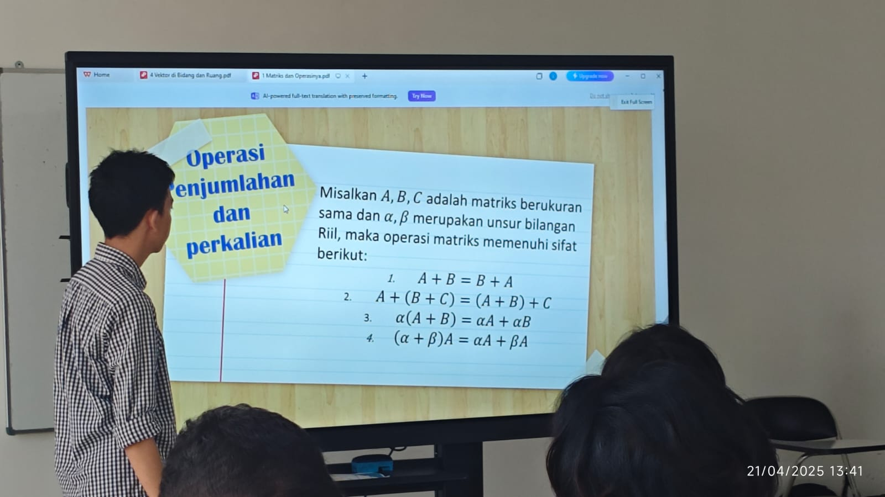
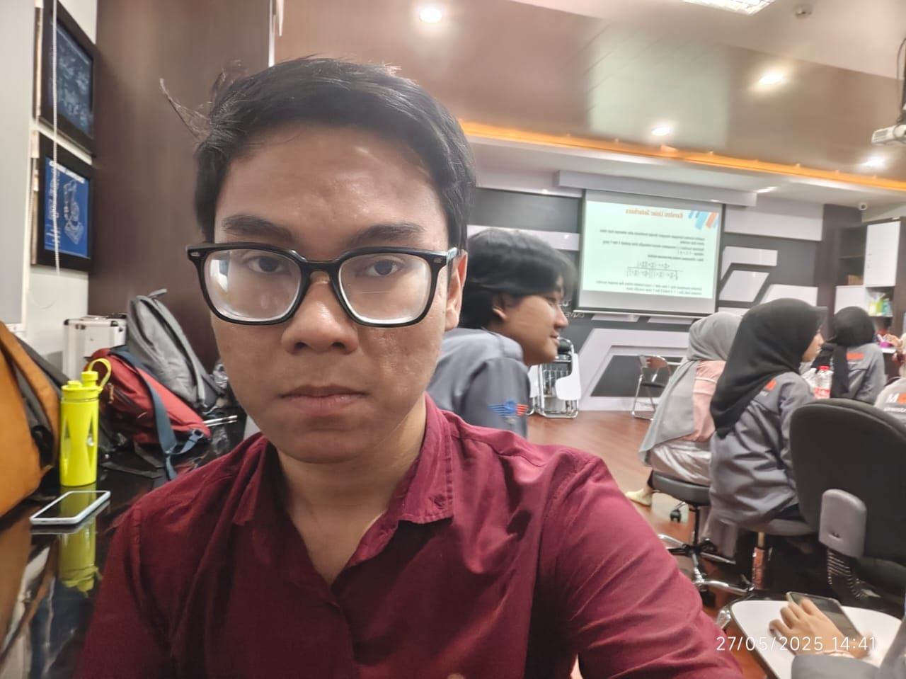

Dimastio Setiawan 2404993
Selama kuliah di Teknik Komputer UPI, saya mengalami banyak pengalaman yang berharga. Saya belajar banyak tentang teknologi komputer, pemrograman, dan jaringan. Selain itu, saya juga mendapatkan kesempatan untuk bekerja pada proyek-proyek yang menantang dan berkolaborasi dengan teman-teman sekelas yang memiliki minat yang sama. Pengalaman ini tidak hanya meningkatkan pengetahuan teknis saya tetapi juga membantu saya mengembangkan keterampilan komunikasi dan kerja tim yang penting dalam dunia profesional. Saya sangat bersyukur atas kesempatan ini dan berharap dapat terus belajar dan berkembang di bidang teknik komputer.
Selain itu, saya juga aktif dalam berbagai kegiatan ekstrakurikuler di kampus, seperti klub teknologi dan organisasi mahasiswa. Kegiatan ini memberikan saya kesempatan untuk berinteraksi dengan mahasiswa dari berbagai jurusan dan latar belakang, memperluas jaringan sosial saya, dan mengembangkan keterampilan kepemimpinan. Saya percaya bahwa pengalaman ini akan sangat berguna dalam karir saya di masa depan, karena dunia teknologi terus berkembang dan membutuhkan individu yang mampu beradaptasi dengan cepat dan bekerja sama dengan orang lain.

